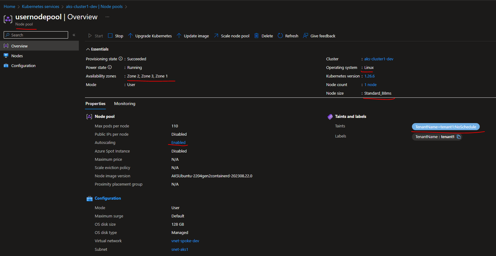

Create a new user node pool in AKS using terraform
Introduction
In Azure Kubernetes Service (AKS), there are two types of node pools: system node pools and user node pools. These node pools serve different purposes and are used for distinct workloads.
This guide will walk you through creating a new user node pool in Azure Kubernetes Service (AKS) using Terraform and implementing taints and tolerations.
Technical Scenario
In this scenario, we will create a new user node pool in an existing AKS cluster using Terraform. We'll apply a taint to this node pool. Then, we'll deploy an application with tolerations to ensure it runs on nodes with the corresponding taint.
Objective
In this exercise we will accomplish & learn how to implement following:
- Step 1: Declare & Define Variables
- Step 2: Create a new user node pool in AKS using Terraform
- Step 3: Verify the new user node pool Taint
- Step 4: Deploy an application with tolerations to run on nodes with the taint
- Step 5: Verify your application status
Prerequisites:
-
Terraform Installed: Ensure you have Terraform installed on your local machine.
-
Azure CLI: Install the Azure Command-Line Interface (CLI) for authentication.
-
Terraform Configuration: Make sure you have an existing Terraform configuration for your AKS cluster.
Implementation Details
This guide will walk you through creating a new user node pool in Azure Kubernetes Service (AKS) using Terraform and implementing taints and tolerations.
login to Azure
Verify that you are logged into the right Azure subscription before start anything in visual studio code
Connect to Cluster
Use the following command to connect to your AKS cluster.
# Azure Kubernetes Service Cluster User Role
az aks get-credentials -g "rg-aks-dev" -n "aks-cluster1-dev"
# Azure Kubernetes Service Cluster Admin Role
az aks get-credentials -g "rg-aks-dev" -n "aks-cluster1-dev" --admin
# get nodes
kubectl get no
kubectl get namespace -A
Step 1: Declare & Define Variables
In your Terraform configuration file, declare variables for AKS cluster details, and node pool configuration.
This table presents the variables along with their descriptions, data types, and default values:
| Variable Name | Description | Type | Default Value |
|---|---|---|---|
| user_node_pool_enabled | Should the User Node Pool enabled? Defaults to false. | bool | false |
| user_node_pool_vm_size | Specifies the VM size of the user node pool | string | Standard_B4ms |
| user_node_pool_availability_zones | Specifies the availability zones of the user node pool | list(string) | ["1", "2", "3"] |
| user_node_pool_name | Specifies the name of the user node pool | string | agentpool |
| user_node_pool_subnet_name | Specifies the name of the subnet that hosts the user node pool | string | SystemSubnet |
| user_node_pool_subnet_address_prefix | Specifies the address prefix of the subnet that hosts the user node pool | list(string) | ["10.0.0.0/20"] |
| user_node_pool_enable_auto_scaling | Whether to enable auto-scaler. Defaults to false. | bool | false |
| user_node_pool_enable_host_encryption | Should the nodes in this Node Pool have host encryption enabled? Defaults to false. | bool | false |
| user_node_pool_enable_node_public_ip | Should each node have a Public IP Address? Defaults to false. Changing this forces a new resource to be created. | bool | false |
| user_node_pool_max_pods | The maximum number of pods that can run on each agent. Changing this forces a new resource to be created. | number | 30 |
| user_node_pool_node_labels | A list of Kubernetes taints which should be applied to nodes in the agent pool (e.g key=value:NoSchedule). Changing this forces a new resource to be created. | map(any) | {"kubernetes.azure.com/scalesetpriority" = "spot"} |
| user_node_pool_node_taints | A map of Kubernetes labels which should be applied to nodes in this Node Pool. Changing this forces a new resource to be created. | list(string) | ["kubernetes.azure.com/scalesetpriority=spot:NoSchedule"] |
| user_node_pool_os_disk_type | The type of disk which should be used for the Operating System. Possible values are Ephemeral and Managed. Defaults to Managed. Changing this forces a new resource to be created. | string | Managed |
| user_node_pool_os_type | The type of Operating System. The operating system used on each Node in this Node Pool. | string | Linux |
| user_node_pool_priority | The priority of the Virtual Machines in the Virtual Machine Scale Set backing this Node Pool. | string | Regular |
| user_node_pool_max_count | The maximum number of nodes which should exist within this Node Pool. Valid values are between 0 and 1000 and must be greater than or equal to min_count. | number | 5 |
| user_node_pool_min_count | The minimum number of nodes which should exist within this Node Pool. Valid values are between 0 and 1000 and must be less than or equal to max_count. | number | 1 |
| user_node_pool_node_count | The initial number of nodes which should exist within this Node Pool. Valid values are between 0 and 1000 and must be a value in the range min_count - max_count. | number | 2 |
| user_node_pool_os_disk_size_gb | The size of the OS Disk on each Node in this Node Pool. | number | 128 |
Declare Variables
// ========================== Azure Kubernetes services (AKS)- User Node Pool ==========================
variable "user_node_pool_enabled" {
description = "(Optional) Should the User Node Pool enabled? Defaults to false."
type = bool
default = false
}
variable "user_node_pool_vm_size" {
description = "Specifies the vm size of the user node pool"
default = "Standard_B4ms"
type = string
}
variable "user_node_pool_availability_zones" {
description = "Specifies the availability zones of the user node pool"
default = ["1", "2", "3"]
type = list(string)
}
variable "user_node_pool_name" {
description = "Specifies the name of the user node pool"
default = "agentpool"
type = string
}
variable "user_node_pool_subnet_name" {
description = "Specifies the name of the subnet that hosts the user node pool"
default = "SystemSubnet"
type = string
}
variable "user_node_pool_subnet_address_prefix" {
description = "Specifies the address prefix of the subnet that hosts the user node pool"
default = ["10.0.0.0/20"]
type = list(string)
}
variable "user_node_pool_enable_auto_scaling" {
description = "(Optional) Whether to enable auto-scaler. Defaults to false."
type = bool
default = false
}
variable "user_node_pool_enable_host_encryption" {
description = "(Optional) Should the nodes in this Node Pool have host encryption enabled? Defaults to false."
type = bool
default = false
}
variable "user_node_pool_enable_node_public_ip" {
description = "(Optional) Should each node have a Public IP Address? Defaults to false. Changing this forces a new resource to be created."
type = bool
default = false
}
variable "user_node_pool_max_pods" {
description = "(Optional) The maximum number of pods that can run on each agent. Changing this forces a new resource to be created."
type = number
default = 30
}
variable "user_node_pool_node_labels" {
description = "(Optional) A list of Kubernetes taints which should be applied to nodes in the agent pool (e.g key=value:NoSchedule). Changing this forces a new resource to be created."
type = map(any)
default = { "kubernetes.azure.com/scalesetpriority" = "spot" }
}
variable "user_node_pool_node_taints" {
description = "(Optional) A map of Kubernetes labels which should be applied to nodes in this Node Pool. Changing this forces a new resource to be created."
type = list(string)
default = ["kubernetes.azure.com/scalesetpriority=spot:NoSchedule"]
}
variable "user_node_pool_os_disk_type" {
description = "(Optional) The type of disk which should be used for the Operating System. Possible values are Ephemeral and Managed. Defaults to Managed. Changing this forces a new resource to be created."
type = string
default = "Managed"
}
variable "user_node_pool_os_type" {
description = "(Optional) The type of Operating System. The operating system used on each Node in this Node Pool."
type = string
default = "Linux"
}
variable "user_node_pool_priority" {
description = "(Optional) The priority of the Virtual Machines in the Virtual Machine Scale Set backing this Node Pool."
type = string
default = "Regular"
}
variable "user_node_pool_max_count" {
description = "(Required) The maximum number of nodes which should exist within this Node Pool. Valid values are between 0 and 1000 and must be greater than or equal to min_count."
type = number
default = 5
}
variable "user_node_pool_min_count" {
description = "(Required) The minimum number of nodes which should exist within this Node Pool. Valid values are between 0 and 1000 and must be less than or equal to max_count."
type = number
default = 1
}
variable "user_node_pool_node_count" {
description = "(Optional) The initial number of nodes which should exist within this Node Pool. Valid values are between 0 and 1000 and must be a value in the range min_count - max_count."
type = number
default = 2
}
variable "user_node_pool_os_disk_size_gb" {
description = "(Optional) The size of the OS Disk on each Node in this Node Pool."
type = number
default = 128
}
Define variables
dev-variables.tfvar - update this existing file for AKS values for development environment.
# user_node_pool
user_node_pool_enabled = true
user_node_pool_enable_auto_scaling = true
user_node_pool_max_count = 5
user_node_pool_min_count = 1
user_node_pool_max_pods = 110
user_node_pool_node_count = 1
user_node_pool_node_labels = {"TenantName" = "tenant1"}
user_node_pool_node_taints = ["TenantName=tenant1:NoSchedule"]
user_node_pool_name = "usernodepool" #"sysnodepool"
user_node_pool_os_disk_size_gb = 128
user_node_pool_vm_size = "Standard_B8ms"
user_node_pool_availability_zones = ["1", "2", "3"]
Step 2: Create a new user node pool in AKS using Terraform
Define the new user node pool in your Terraform configuration. Ensure that you specify the desired taint on the node pool.
resource "azurerm_kubernetes_cluster_node_pool" "user" {
count = var.user_node_pool_enabled ? 1 : 0
zones = var.user_node_pool_availability_zones
enable_auto_scaling = var.user_node_pool_enable_auto_scaling
os_disk_type = var.user_node_pool_os_disk_type
os_type = var.user_node_pool_os_type
priority = var.user_node_pool_priority
os_disk_size_gb = var.user_node_pool_os_disk_size_gb
vm_size = var.user_node_pool_vm_size
kubernetes_cluster_id = azurerm_kubernetes_cluster.aks.id
max_count = var.user_node_pool_max_count
min_count = var.user_node_pool_min_count
max_pods = var.user_node_pool_max_pods
node_count = var.user_node_pool_node_count
node_labels = var.user_node_pool_node_labels
node_taints = var.user_node_pool_node_taints
mode = "User"
name = var.user_node_pool_name
# orchestrator_version = data.azurerm_kubernetes_service_versions.current.latest_version
vnet_subnet_id = azurerm_subnet.aks.id
tags = merge(local.default_tags, var.aks_tags)
lifecycle {
ignore_changes = [
tags,
]
}
}
Terraform validate
run terraform plan & apply again here.
Terraform plan
terraform apply
terraform apply dev-plan
# output
azurerm_kubernetes_cluster_node_pool.user["1"]: Creating...
.
.
.
Apply complete! Resources: 1 added, 0 changed, 0 destroyed.
Outputs:
Step 3: Verify the new user node pool Taint
After creating the new user node pool, it's essential to confirm that taint has been successfully applied. You can use the azure portal to verification the process.

Node List Status Before and After:
Before creating new user node pool, the list of nodes may look like this:
Before
kubectl get nodes -o wide
# output
NAME STATUS ROLES AGE VERSION INTERNAL-IP EXTERNAL-IP OS-IMAGE KERNEL-VERSION CONTAINER-RUNTIME
aks-agentpool-25316841-vmss000000 Ready agent 27h v1.26.6 10.64.4.4 <none> Ubuntu 22.04.3 LTS 5.15.0-1041-azure containerd://1.7.1+azure-1
aks-agentpool-25316841-vmss000001 Ready agent 26h v1.26.6 10.64.4.113 <none> Ubuntu 22.04.3 LTS 5.15.0-1041-azure containerd://1.7.1+azure-1
After
After creating the new user node pool, the node list may include the new user node pool and look like this:
kubectl get nodes -o wide
# output
NAME STATUS ROLES AGE VERSION INTERNAL-IP EXTERNAL-IP OS-IMAGE KERNEL-VERSION CONTAINER-RUNTIME
aks-agentpool-25316841-vmss000000 Ready agent 27h v1.26.6 10.64.4.4 <none> Ubuntu 22.04.3 LTS 5.15.0-1041-azure containerd://1.7.1+azure-1
aks-agentpool-25316841-vmss000001 Ready agent 26h v1.26.6 10.64.4.113 <none> Ubuntu 22.04.3 LTS 5.15.0-1041-azure containerd://1.7.1+azure-1
aks-usernodepool-19872531-vmss000000 Ready agent 21m v1.26.6 10.64.4.222 <none> Ubuntu 22.04.3 LTS 5.15.0-1041-azure containerd://1.7.1+azure-1
Step 4: Deploy an Application with Tolerations
Now, let's deploy your application onto the AKS cluster, considering the taint we've applied to the user node pool. To achieve this, you need to create a Kubernetes manifest for your application with tolerations that match the taint on the node pool. Here's an example of a tolerations YAML manifest:
tolerations:
- key: "TenantName"
operator: "Equal"
value: "tenant1"
effect: "NoSchedule" # This pod tolerates the taint
Now, let's integrate this into your complete deployment.yaml file:
apiVersion: apps/v1
kind: Deployment
metadata:
name: aspnet-api
namespace: sample
spec:
replicas: 1
selector:
matchLabels:
app: aspnet-api
strategy:
type: RollingUpdate
rollingUpdate:
maxSurge: 1
maxUnavailable: 1
minReadySeconds: 5
template:
metadata:
labels:
app: aspnet-api
spec:
nodeSelector:
"kubernetes.io/os": linux
serviceAccountName: default
containers:
- name: aspnet-api
image: acr1dev.azurecr.io/sample/aspnet-api:20230323.15
imagePullPolicy: Always
ports:
- name: http
containerPort: 80
protocol: TCP
tolerations:
- key: "TenantName"
operator: "Equal"
value: "tenant1"
effect: "NoSchedule" # This pod tolerates the taint
# kubectl apply -f deployment.yaml -n sample
Now that you have your deployment.yaml ready, proceed to the next steps.
Deploy the Application
To deploy your application to the AKS cluster, apply the Kubernetes manifest using the following command:
Step 5: Verify Your Application Status
To ensure your application has been successfully deployed, you can check the status of your application pods using kubectl. Here's how:
Before Applying the Tolerations: Before
# output
sample aspnet-api-7d96f84c56-88dnz 1/1 Running 0 3m31s 10.64.4.225 aks-agentpool-25316841-vmss000001 <none> <none>
sample aspnet-app-c5c847d44-tfhw6 1/1 Running 0 7s 10.64.4.248 aks-agentpool-25316841-vmss000001 <none> <none>
After Applying the Tolerations:
kubectl get pods -o wide -A
# output
sample aspnet-api-7d96f84c56-88dnz 1/1 Running 0 3m31s 10.64.4.225 aks-usernodepool-19872531-vmss000000 <none> <none>
sample aspnet-app-c5c847d44-tfhw6 1/1 Running 0 7s 10.64.4.248 aks-usernodepool-19872531-vmss000000 <none> <none>
You should now observe your application pods running on nodes with the corresponding taint, as indicated by the change in the node pool. This ensures that your pods are scheduled on the appropriate nodes, considering the taints and tolerations you've configured.
Conclusion
You've successfully created a new user node pool in AKS using Terraform, applied a taint to it, and deployed an application with tolerations to ensure it runs on nodes with the taint.